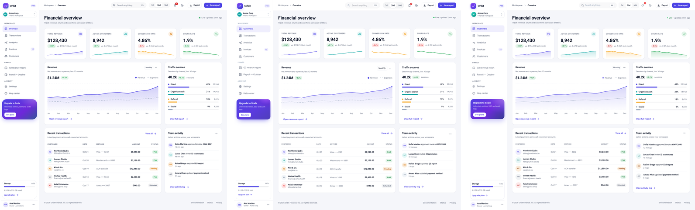
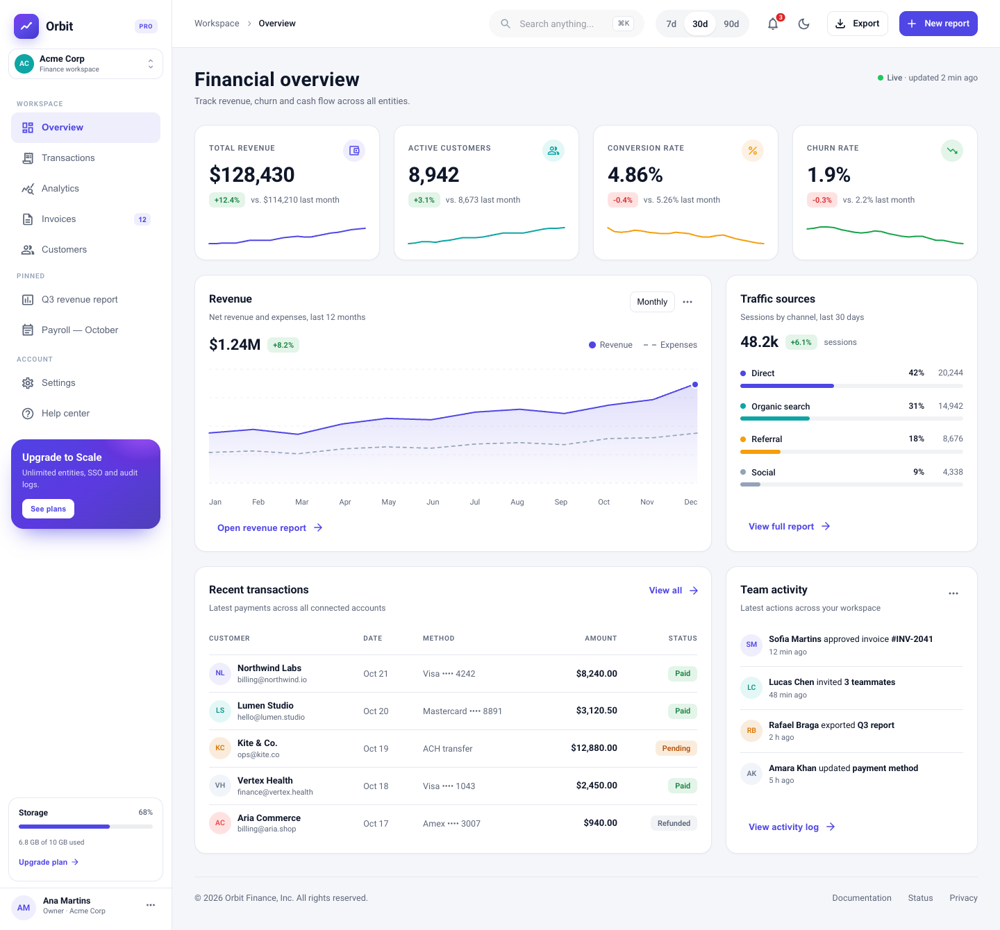
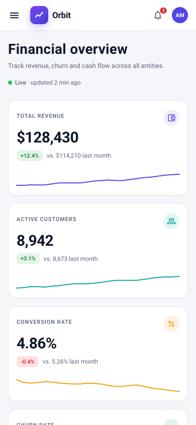
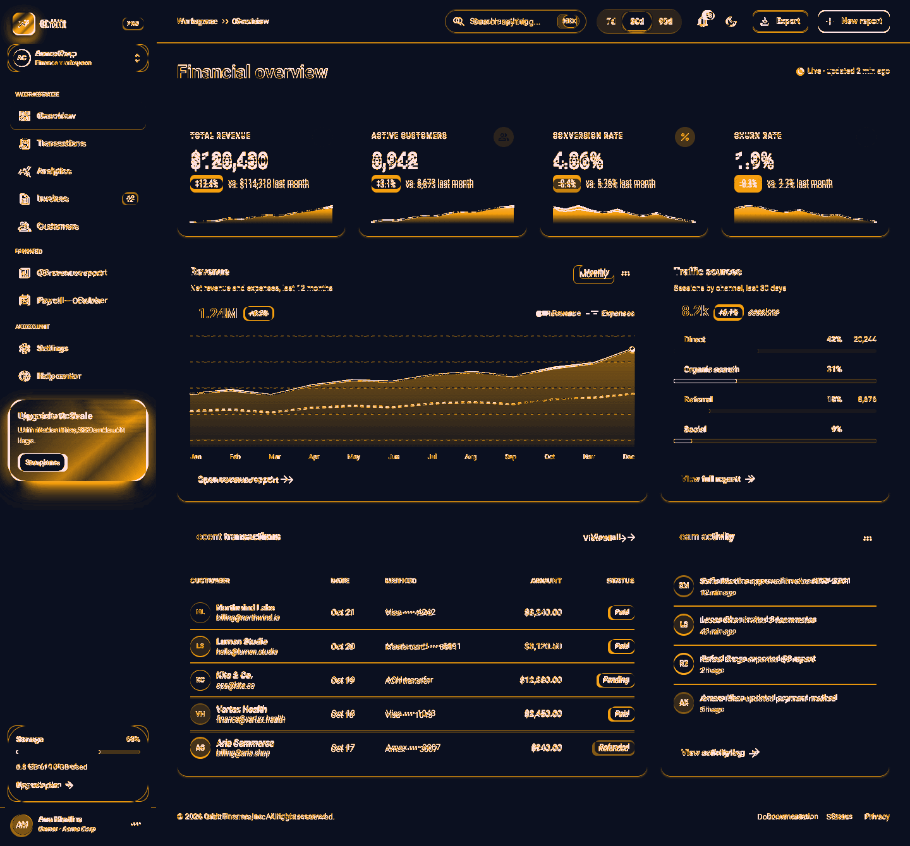
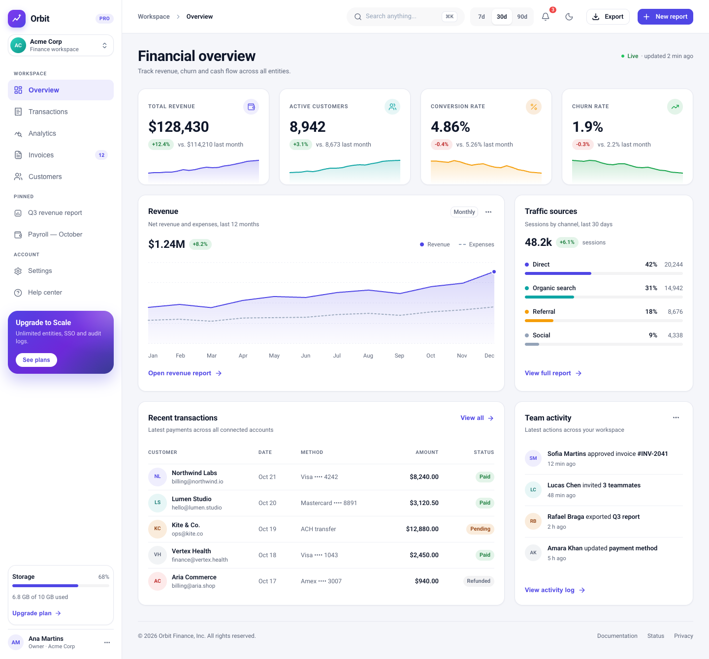
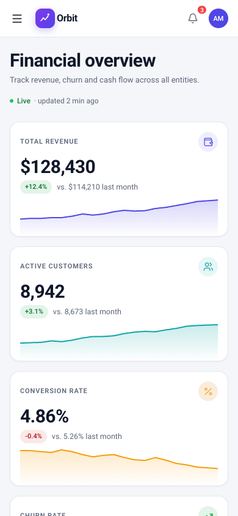
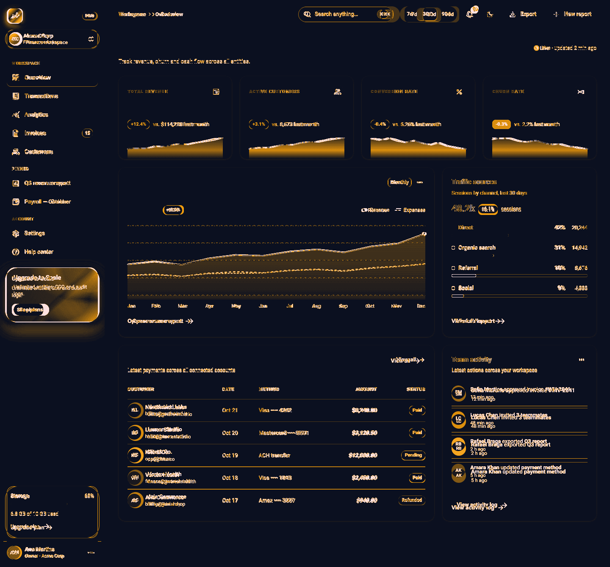

Quanto nos aproximamos
| Métrica | caso-a | caso-b | Δ (caso-a−caso-b) |
|---|---|---|---|
| SSIM | 88.5% | 90.8% | -2.3 pp |
| Pixels até Δ16 | 94.3% | 95.1% | -0.8 pp |
| Pixels até Δ64 | 97.3% | 97.6% | -0.3 pp |
| Similaridade de bordas | 67.0% | 71.6% | -4.5 pp |
| Similaridade de paleta | 99.6% | 99.5% | +0.1 pp |
| Geometria (12 âncoras) | 98.5% | 99.5% | -1.0 pp |
| SSIM mobile | 85.1% | 86.7% | -1.7 pp |
| SSIM mobile (fold) | 91.0% | 88.5% | +2.5 pp |
| MAE (0–255) | 4.5 | 3.788 | +0.71 |
| ΔE paleta (menor melhor) | 0.21 | 0.25 | -0.04 |
| Δ de altura desktop (px) | 0 px | 0 px | — |
SSIM mede estrutura/luminância (1.0 = idêntico). “Pixels até Δ16” é a fração de píxeis cuja maior diferença de canal é ≤ 16/255. Geometria compara 12 âncoras de texto (posição e caixa). A coluna Δ é a diferença em pontos percentuais para métricas 0–1; MAE e ΔE aparecem em unidades próprias (menor é melhor).
Fidelidade por região (SSIM)
| Região | caso-a | caso-b | Δ |
|---|---|---|---|
| charts | 92.8% | 93.7% | -0.9 pp |
| footer | 93.3% | 100.0% | -6.7 pp |
| hero | 97.3% | 96.7% | +0.6 pp |
| kpis | 83.9% | 94.4% | -10.4 pp |
| sidebar | 88.0% | 88.8% | -0.8 pp |
| table | 83.2% | 83.4% | -0.1 pp |
| topbar | 83.4% | 87.2% | -3.9 pp |
Como cada um performou
| Engenharia | caso-a | caso-b |
|---|---|---|
| Build OK | sim | sim |
| Tempo de build | 3.87s | 0.75s |
| JS gzip | 170.9 KB | 155.0 KB |
| CSS gzip | 25.9 KB | 0.2 KB |
| Linhas de código | 2605 | 2800 |
| Arquivos fonte | 16 | 18 |
| Instalação (se rodou) | — | — |
| FCP | 148 ms | 176 ms |
| LCP | 148 ms | 176 ms |
| Nós DOM | 604 | 527 |
| Nós MUI | 511 | 363 |
| Erros de console | 0 | 0 |
| Violações axe (nós) | 1 (21) | 0 (0) |
| Overflow horizontal 390px | não | não |
| Toggle de tema funciona | sim | sim |
| Drawer mobile abre | sim | sim |
| Adesão à skill (checagens) | 12/12 · 100.0% | 9/12 · 75.0% |
Checagens de boas práticas MUI v9
- caso-a: nenhuma falha
- caso-b: no_barrel_imports, path_imports_ratio, color_schemes_dark
Aderência = 12 checagens estáticas: MUI v9, build, path imports, APIs removidas, system props, ThemeProvider/CssBaseline, colorSchemes/useColorScheme, slotProps, Roboto, Grid v2, aria-labels.
Processo
| Sinal | caso-a | caso-b |
|---|---|---|
| Duração | 29.6 min | 31.0 min |
| Passos do agente | 177 | 166 |
| Chamadas de ferramenta | 210 | 207 |
| Tokens de entrada | 1,218,725 | 421,227 |
| Tokens de saída | 231,005 | 336,303 |
| Chamadas da skill | 1 | 0 |
| Arquivos da skill lidos | 6 | 0 |
| Acessos indevidos (auditoria) | 0 | 0 |
A auditoria de sessão verifica chamadas da skill, leituras de arquivos e acessos fora da pasta do caso. O caso B rodou com o symlink da skill removido do sistema; a sessão foi auditada para confirmar zero uso.
Veredito
Melhor fidelidade: caso-b — composto 91.7/100, +1.8 pp sobre caso-a. SSIM global 88.5% vs 90.8%; píxeis até Δ16 94.3% vs 95.1%.
Melhor disciplina de engenharia: caso-a — adesão 100.0% (12/12) contra 75.0% (9/12); caso-a não usa barrel imports e adota CSS variables/colorSchemes.
Peso (JS+CSS gzip): caso-a 196.8 KB vs caso-b 155.3 KB. A11y (axe): caso-a 1 violações (21 nós) vs caso-b 0 (0 nós).
Leitura: a skill não melhorou a fidelidade visual neste teste — o caso sem skill foi 1.8 pp melhor. O ganho mensurável da skill está na forma do código (v9 idiomático, CSS variables, path imports), não no resultado visual nem na acessibilidade. Semelhança direta entre os dois clones: SSIM 86.9% / 93.0% de píxeis até Δ16.
Imagens









Achados sobre a skill
- Ganho real: adesão às APIs v9 — 100% vs 75%. caso-a usa 0 barrel imports; caso-b usa 17. caso-a usa CSS variables +
colorSchemes; caso-b recria o tema compalette.mode(padrão legado). - Sem ganho visual: caso-b foi 1.8 pp melhor no composto e 2.3 pp melhor no SSIM. Para um modelo forte, a skill não foi o fator de fidelidade.
- A11y: caso-b teve 0 violações axe; caso-a teve 21 nós de contraste. A skill pede contraste ≥4.5:1, mas não instrui rodar axe — checar foi decisão do agente.
- Peso: caso-a 196.8 KB vs caso-b 155.3 KB (JS+CSS gzip). Parte da diferença são subconjuntos de fonte carregados por caso-a.
- Gap de packaging: o índice da skill referencia
quick-actions/, mas a pasta não existe na instalação (só SKILL.md, subskills e references) — caso-a relatou e não pôde usar snippets. - Nuance de dark mode: a receita do §2 de
themingomite que o seletor default émedia; semcolorSchemeSelector(§6.3) osetModenão aplica. caso-a configurou; caso-b usou o padrão legado e também funciona.
Método
- Referência: Vite + React 19 + MUI 9.5.0, construída por mim seguindo a skill; screenshots em 1440×1340 e 390×844 (Chrome headless, DPR 1).
- Os dois agentes receberam o mesmo briefing e o mesmo PNG; a única diferença textual foi a cláusula “use a skill” vs “não use skills”.
- Caso B: symlink
~/.dsh/skills/mui-agent-skillremovido durante a execução; sessão auditada. - Métricas de imagem: scikit-image SSIM (gaussiano, σ=1.5), MAE, correspondência de píxeis, correlação Sobel, ΔE de paleta e deltas de caixa de 12 âncoras.
- Compósito: 42% SSIM + 20% pixels≤Δ16 + 12% bordas + 8% paleta + 10% geometria + 8% altura.
- Limitação: texto e dados inventados/diferentes penalizam SSIM mesmo com layout correto; a geometria por âncoras isola parte disso.